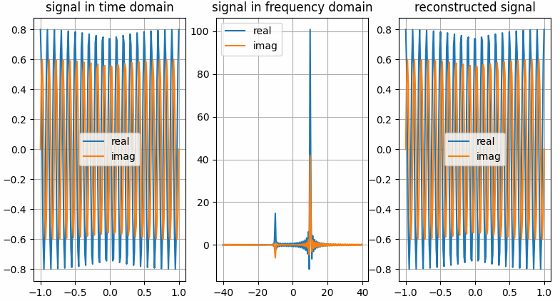

pyaibox.dsp package
Submodules
pyaibox.dsp.convolution module
- pyaibox.dsp.convolution.conv1(f, g, shape='same', axis=0)
Convolution
The convoltuion between f and g can be expressed as
(1)\[\begin{aligned} (f*g)[n] &= \sum_{m=-\infty}^{+\infty}f[m]g[n-m] \\ &= \sum_{m=-\infty}^{+\infty}f[n-m]g[m] \end{aligned} \]- Parameters
f (numpy array) – data to be filtered, can be 2d matrix
g (numpy array) – convolution kernel
shape (int, optional) –
'full': returns the full convolution,'same': returns the central part of the convolutionthat is the same size as x (default).
'valid': returns only those parts of the convolutionthat are computed without the zero-padded edges. LENGTH(y)is MAX(LENGTH(x)-MAX(0,LENGTH(g)-1),0).
shape – convolution axis (the default is 0).
- pyaibox.dsp.convolution.cutfftconv1(y, nfft, Nx, Nh, shape='same', axis=0, ftshift=False)
Throwaway boundary elements to get convolution results.
Throwaway boundary elements to get convolution results.
- Parameters
y (numpy array) – array after
iff.nfft (int) – number of fft points.
Nx (int) – signal length
Nh (int) – filter length
shape (str) – output shape: 1.
'same'–> same size as input x, \(N_x\) 2.'valid'–> valid convolution output 3.'full'–> full convolution output, \(N_x+N_h-1\) (the default is ‘same’)axis (int) – convolution axis (the default is 0)
ftshift (bool, optional) – whether to shift the frequencies (the default is False)
- Returns
y – array with shape specified by
same.- Return type
numpy array
- pyaibox.dsp.convolution.fftconv1(x, h, shape='same', caxis=None, axis=0, keepcaxis=False, nfft=None, ftshift=False, eps=None)
Convolution using Fast Fourier Transformation
Convolution using Fast Fourier Transformation.
- Parameters
x (numpy array) – data to be convolved.
h (numpy array) – filter array, it will be expanded to the same dimensions of
xfirst.shape (str, optional) – output shape: 1.
'same'–> same size as input x, \(N_x\) 2.'valid'–> valid convolution output 3.'full'–> full convolution output, \(N_x+N_h-1\) (the default is ‘same’)caxis (int or None) – If
Xis complex-valued,caxisis ignored. IfXis real-valued andcaxisis integer thenXwill be treated as complex-valued, in this case,caxisspecifies the complex axis; otherwise (None),Xwill be treated as real-valued.axis (int, optional) – axis of convolution operation (the default is 0, which means the first dimension)
keepcaxis (bool) – If
True, the complex dimension will be keeped. Only works whenXis complex-valued array andaxisis notNonebut represents in real format. Default isFalse.nfft (int, optional) – number of fft points (the default is \(2^{nextpow2(N_x+N_h-1)}\)), note that
nfftcan not be smaller than \(N_x+N_h-1\).ftshift (bool, optional) – whether shift frequencies (the default is False)
eps (None or float, optional) – x[abs(x)<eps] = 0 (the default is None, does nothing)
- Returns
y – Convolution result array.
- Return type
numpy array
pyaibox.dsp.correlation module
- pyaibox.dsp.correlation.accc(Sr, isplot=False)
Average cross correlation coefficient
Average cross correlation coefficient (ACCC)
\[\overline{C(\eta)}=\sum_{\eta} s^{*}(\eta) s(\eta+\Delta \eta) \]where, \(\eta, \Delta \eta\) are azimuth time and it’s increment.
- Parameters
Sr (numpy array) – SAR raw signal data \(N_a\times N_r\) or range compressed data.
- Returns
ACCC in each range cell.
- Return type
1d array
- pyaibox.dsp.correlation.acorr(x, P, axis=0, scale=None)
computes auto-correlation using fft
- pyaibox.dsp.correlation.corr1(f, g, shape='same')
Correlation.
the correlation between f and g can be expressed as
(2)\[(f\star g)[n] = \sum_{m=-\infty}^{+\infty}{\overline{f[m]}g[m+n]} = \sum_{m=-\infty}^{+\infty}\overline{f[m-n]}g[m] \]- Parameters
f (numpy array) – data1
g (numpy array) – daat2
shape (str, optional) –
'full': returns the full correlation,'same': returns the central part of the correlationthat is the same size as f (default).
'valid': returns only those parts of the correlationthat are computed without the zero-padded edges. LENGTH(y)is MAX(LENGTH(f)-MAX(0,LENGTH(g)-1),0).
- pyaibox.dsp.correlation.cutfftcorr1(y, nfft, Nx, Nh, shape='same', axis=0, ftshift=False)
Throwaway boundary elements to get correlation results.
Throwaway boundary elements to get correlation results.
- Parameters
y (numpy array) – array after
iff.nfft (int) – number of fft points.
Nx (int) – signal length
Nh (int) – filter length
shape (str) – output shape: 1.
'same'–> same size as input x, \(N_x\) 2.'valid'–> valid correlation output 3.'full'–> full correlation output, \(N_x+N_h-1\) (the default is ‘same’)axis (int) – correlation axis (the default is 0)
ftshift (bool, optional) – whether to shift the frequencies (the default is False)
- Returns
y – array with shape specified by
same.- Return type
numpy array
- pyaibox.dsp.correlation.fftcorr1(x, h, shape='same', caxis=None, axis=0, keepcaxis=False, nfft=None, ftshift=False, eps=None)
Correlation using Fast Fourier Transformation
Correlation using Fast Fourier Transformation.
- Parameters
x (numpy array) – data to be convolved.
h (numpy array) – filter array, it will be expanded to the same dimensions of
xfirst.shape (str, optional) – output shape: 1.
'same'–> same size as input x, \(N_x\) 2.'valid'–> valid correlation output 3.'full'–> full correlation output, \(N_x+N_h-1\) (the default is ‘same’)caxis (int or None) – If
xis complex-valued,caxisis ignored. Ifxis real-valued andcaxisis integer thenxwill be treated as complex-valued, in this case,caxisspecifies the complex axis; otherwise (None),xwill be treated as real-valued.axis (int, optional) – axis of correlation operation (the default is 0, which means the first dimension)
keepcaxis (bool) – If
True, the complex dimension will be keeped. Only works whenXis complex-valued array andaxisis notNonebut represents in real format. Default isFalse.nfft (int, optional) – number of fft points (the default is None, \(2^{nextpow2(N_x+N_h-1)}\)), note that
nfftcan not be smaller than \(N_x+N_h-1\).ftshift (bool, optional) – whether shift frequencies (the default is False)
eps (None or float, optional) – x[abs(x)<eps] = 0 (the default is None, does nothing)
- Returns
y – Correlation result array.
- Return type
numpy array
- pyaibox.dsp.correlation.xcorr(A, B, shape='same', mod=None, axis=0)
Cross-correlation function estimates.
- Parameters
A (numpy array) – data1
B (numpy array) – data2
shape (str, optional) – output shape: 1.
'same'–> same size as input x, \(N_x\) 2.'valid'–> valid correlation output 3.'full'–> full correlation output, \(N_x+N_h-1\)mod (str, optional) –
'biased': scales the raw cross-correlation by 1/M.'unbiased': scales the raw correlation by 1/(M-abs(lags)).'coeff': normalizes the sequence so that the auto-correlationsat zero lag are identically 1.0.
None: no scaling (this is the default).
pyaibox.dsp.ffts module
- pyaibox.dsp.ffts.fft(x, n=None, caxis=None, axis=0, keepcaxis=False, norm=None, shift=False)
FFT in pyaibox
FFT in pyaibox, both real and complex valued tensors are supported.
- Parameters
x (array) – When
xis complex, it can be either in real-representation format or complex-representation format.n (int, optional) – The number of fft points (the default is None –> equals to signal dimension)
caxis (int or None) – If
Xis complex-valued,caxisis ignored. IfXis real-valued andcaxisis integer thenXwill be treated as complex-valued, in this case,caxisspecifies the complex axis; otherwise (None),Xwill be treated as real-valued.axis (int, optional) – axis of fft operation (the default is 0, which means the first dimension)
keepcaxis (bool) – If
True, the complex dimension will be keeped. Only works whenXis complex-valued array andaxisis notNonebut represents in real format. Default isFalse.norm (None or str, optional) – Normalization mode. For the forward transform (fft()), these correspond to: -
None- no normalization (default) - “ortho” - normalize by1/sqrt(n)(making the FFT orthonormal)shift (bool, optional) – shift the zero frequency to center (the default is False)
- Returns
Examples
The results shown in the above figure can be obtained by the following codes.
import numpy as np import pyaibox as pb import matplotlib.pyplot as plt shift = True frq = [10, 10] amp = [0.8, 0.6] Fs = 80 Ts = 2. Ns = int(Fs * Ts) t = np.linspace(-Ts / 2., Ts / 2., Ns).reshape(Ns, 1) f = pb.freq(Ns, Fs, shift=shift) f = pb.fftfreq(Ns, Fs, norm=False, shift=shift) # ---complex vector in real representation format x = amp[0] * np.cos(2. * np.pi * frq[0] * t) + 1j * amp[1] * np.sin(2. * np.pi * frq[1] * t) # ---do fft Xc = pb.fft(x, n=Ns, caxis=None, axis=0, keepcaxis=False, shift=shift) # ~~~get real and imaginary part xreal = pb.real(x, caxis=None, keepcaxis=False) ximag = pb.imag(x, caxis=None, keepcaxis=False) Xreal = pb.real(Xc, caxis=None, keepcaxis=False) Ximag = pb.imag(Xc, caxis=None, keepcaxis=False) # ---do ifft x̂ = pb.ifft(Xc, n=Ns, caxis=None, axis=0, keepcaxis=False, shift=shift) # ~~~get real and imaginary part x̂real = pb.real(x̂, caxis=None, keepcaxis=False) x̂imag = pb.imag(x̂, caxis=None, keepcaxis=False) plt.figure() plt.subplot(131) plt.grid() plt.plot(t, xreal) plt.plot(t, ximag) plt.legend(['real', 'imag']) plt.title('signal in time domain') plt.subplot(132) plt.grid() plt.plot(f, Xreal) plt.plot(f, Ximag) plt.legend(['real', 'imag']) plt.title('signal in frequency domain') plt.subplot(133) plt.grid() plt.plot(t, x̂real) plt.plot(t, x̂imag) plt.legend(['real', 'imag']) plt.title('reconstructed signal') plt.show() # ---complex vector in real representation format x = pb.c2r(x, caxis=-1) # ---do fft Xc = pb.fft(x, n=Ns, caxis=-1, axis=0, keepcaxis=False, shift=shift) # ~~~get real and imaginary part xreal = pb.real(x, caxis=-1, keepcaxis=False) ximag = pb.imag(x, caxis=-1, keepcaxis=False) Xreal = pb.real(Xc, caxis=-1, keepcaxis=False) Ximag = pb.imag(Xc, caxis=-1, keepcaxis=False) # ---do ifft x̂ = pb.ifft(Xc, n=Ns, caxis=-1, axis=0, keepcaxis=False, shift=shift) # ~~~get real and imaginary part x̂real = pb.real(x̂, caxis=-1, keepcaxis=False) x̂imag = pb.imag(x̂, caxis=-1, keepcaxis=False) plt.figure() plt.subplot(131) plt.grid() plt.plot(t, xreal) plt.plot(t, ximag) plt.legend(['real', 'imag']) plt.title('signal in time domain') plt.subplot(132) plt.grid() plt.plot(f, Xreal) plt.plot(f, Ximag) plt.legend(['real', 'imag']) plt.title('signal in frequency domain') plt.subplot(133) plt.grid() plt.plot(t, x̂real) plt.plot(t, x̂imag) plt.legend(['real', 'imag']) plt.title('reconstructed signal') plt.show()
{kind=link}
- pyaibox.dsp.ffts.fft2(img)
Improved 2D fft
- pyaibox.dsp.ffts.fftfreq(n, fs, norm=False, shift=False)
Return the Discrete Fourier Transform sample frequencies
Return the Discrete Fourier Transform sample frequencies.
Given a window length n and a sample rate fs, if shift is
True:f = [-n/2, ..., -1, 0, 1, ..., n/2-1] / (d*n) if n is even f = [-(n-1)/2, ..., -1, 0, 1, ..., (n-1)/2] / (d*n) if n is odd
Given a window length n and a sample rate fs, if shift is
False:f = [0, 1, ..., n/2-1, -n/2, ..., -1] / (d*n) if n is even f = [0, 1, ..., (n-1)/2, -(n-1)/2, ..., -1] / (d*n) if n is odd
where \(d = 1/f_s\), if
normisTrue, \(d = 1\), else \(d = 1/f_s\).
- pyaibox.dsp.ffts.fftshift(x, axis=None)
Shift the zero-frequency component to the center of the spectrum.
This function swaps half-spaces for all axes listed (defaults to all). Note that
y[0]is the Nyquist component only iflen(x)is even.- Parameters
x (numpy array) – The input array.
axis (int, optional) – Axes over which to shift. (Default is None, which shifts all axes.)
- Returns
y – The shifted array.
- Return type
numpy array
See also
ifftshiftThe inverse of
fftshift().
- pyaibox.dsp.ffts.fftx(x, n=None)
- pyaibox.dsp.ffts.ffty(x, n=None)
- pyaibox.dsp.ffts.freq(n, fs, norm=False, shift=False)
Return the sample frequencies
Return the sample frequencies.
Given a window length n and a sample rate fs, if shift is
True:f = [-n/2, ..., n/2] / (d*n)
Given a window length n and a sample rate fs, if shift is
False:f = [0, 1, ..., n] / (d*n)
If
normisTrue, \(d = 1\), else \(d = 1/f_s\).
- pyaibox.dsp.ffts.ifft(x, n=None, caxis=None, axis=0, keepcaxis=False, norm=None, shift=False)
IFFT in pyaibox
IFFT in pyaibox, both real and complex valued tensors are supported.
- Parameters
x (array) – When
xis complex, it can be either in real-representation format or complex-representation format.n (int, optional) – The number of ifft points (the default is None –> equals to signal dimension)
caxis (int or None) – If
Xis complex-valued,caxisis ignored. IfXis real-valued andcaxisis integer thenXwill be treated as complex-valued, in this case,caxisspecifies the complex axis; otherwise (None),Xwill be treated as real-valued.axis (int, optional) – axis of fft operation (the default is 0, which means the first dimension)
keepcaxis (bool) – If
True, the complex dimension will be keeped. Only works whenXis complex-valued array andaxisis notNonebut represents in real format. Default isFalse.norm (bool, optional) – Normalization mode. For the backward transform (ifft()), these correspond to: -
None- no normalization (default) - “ortho” - normalize by 1``/sqrt(n)`` (making the IFFT orthonormal)shift (bool, optional) – shift the zero frequency to center (the default is False)
- Returns
- pyaibox.dsp.ffts.ifftshift(x, axis=None)
Shift the zero-frequency component back.
The inverse of
fftshift(). Although identical for even-length x, the functions differ by one sample for odd-length x.- Parameters
x (numpy array) – The input array.
axis (int, optional) – Axes over which to shift. (Default is None, which shifts all axes.)
- Returns
y – The shifted array.
- Return type
numpy array
See also
fftshiftThe inverse of ifftshift.
Examples
x = [1, 2, 3, 4, 5, 6] y = np.fft.ifftshift(x) print(y) y = pb.ifftshift(x) print(y) x = [1, 2, 3, 4, 5, 6, 7] y = np.fft.ifftshift(x) print(y) y = pb.ifftshift(x) print(y) axis = (0, 1) # axis = 0, axis = 1 x = [[1, 2, 3, 4, 5, 6], [0, 2, 3, 4, 5, 6]] y = np.fft.ifftshift(x, axis) print(y) y = pb.ifftshift(x, axis) print(y) x = [[1, 2, 3, 4, 5, 6, 7], [0, 2, 3, 4, 5, 6, 7]] y = np.fft.ifftshift(x, axis) print(y) y = pb.ifftshift(x, axis) print(y)
- pyaibox.dsp.ffts.ifftx(x, n=None)
- pyaibox.dsp.ffts.iffty(x, n=None)
- pyaibox.dsp.ffts.padfft(X, nfft=None, axis=0, shift=False)
PADFT Pad array for doing FFT or IFFT
PADFT Pad array for doing FFT or IFFT
pyaibox.dsp.function_base module
- pyaibox.dsp.function_base.unwrap(x, discont=3.141592653589793, axis=-1)
Unwrap by changing deltas between values to \(2\pi\) complement.
Unwrap radian phase x by changing absoluted jumps greater than discont to their \(2\pi\) complement along the given axis.
- Parameters
- Returns
The unwrapped.
- Return type
ndarray
Examples
x = np.array([3.14, -3.12, 3.12, 3.13, -3.11]) y_np = unwrap(x) print(y_np, y_np.shape, type(y_np)) # output tensor([3.1400, 3.1632, 3.1200, 3.1300, 3.1732], dtype=torch.float64) torch.Size([5]) <class 'torch.Tensor'>
- pyaibox.dsp.function_base.unwrap2(x, discont=3.141592653589793, axis=-1)
Unwrap by changing deltas between values to \(2\pi\) complement.
Unwrap radian phase x by changing absoluted jumps greater than discont to their \(2\pi\) complement along the given axis. The elements are divided into 2 parts (with equal length) along the given axis. The first part is unwrapped in inverse order, while the second part is unwrapped in normal order.
- Parameters
- Returns
Tensor – The unwrapped.
see
unwrap()
Examples
x = np.array([3.14, -3.12, 3.12, 3.13, -3.11]) y = unwrap(x) print(y, y.shape, type(y)) print("------------------------") x = np.array([3.14, -3.12, 3.12, 3.13, -3.11]) x = np.concatenate((x[::-1], x), axis=0) print(x) y = unwrap2(x) print(y, y.shape, type(y)) # output [3.14 3.16318531 3.12 3.13 3.17318531] (5,) <class 'numpy.ndarray'> ------------------------ [3.17318531 3.13 3.12 3.16318531 3.14 3.14 3.16318531 3.12 3.13 3.17318531] (10,) <class 'numpy.ndarray'>
pyaibox.dsp.interpolation1d module
- pyaibox.dsp.interpolation1d.interp(x, xp, yp, mod='sinc')
interpolation
interpolation
- Parameters
x (array_like) – The x-coordinates of the interpolated values.
xp (1-D sequence of floats) – The x-coordinates of the data points, must be increasing if argument period is not specified. Otherwise, xp is internally sorted after normalizing the periodic boundaries with
xp = xp % period.yp (1-D sequence of float or complex) – The y-coordinates of the data points, same length as xp.
mod (str, optional) –
'sinc': sinc interpolation (the default is ‘sinc’)
- Returns
y – The interpolated values, same shape as x.
- Return type
- pyaibox.dsp.interpolation1d.sinc(x)
- pyaibox.dsp.interpolation1d.sinc_interp(xin, r=1.0)
- pyaibox.dsp.interpolation1d.sinc_table(Nq, Ns)
pyaibox.dsp.interpolation2d module
- pyaibox.dsp.interpolation2d.interp2d(X, ratio=(2, 2), axis=(0, 1), method='cubic')
pyaibox.dsp.normalsignals module
- pyaibox.dsp.normalsignals.chirp(t, T, Kr)
Create a chirp signal: .. math:
S_{tx}(t) = rect(t/T) * exp(1j*pi*Kr*t^2)
- pyaibox.dsp.normalsignals.hs(x)
Heavyside function : .. math:
hv(x) = {1, if x>=0; 0, otherwise}
- pyaibox.dsp.normalsignals.ihs(x)
Inverse Heavyside function: .. math:
ihv(x) = {0, if x>=0; 1, otherwise}
- pyaibox.dsp.normalsignals.rect(x)
Rectangle function: .. math:
rect(x) = {1, if |x|<= 0.5; 0, otherwise}